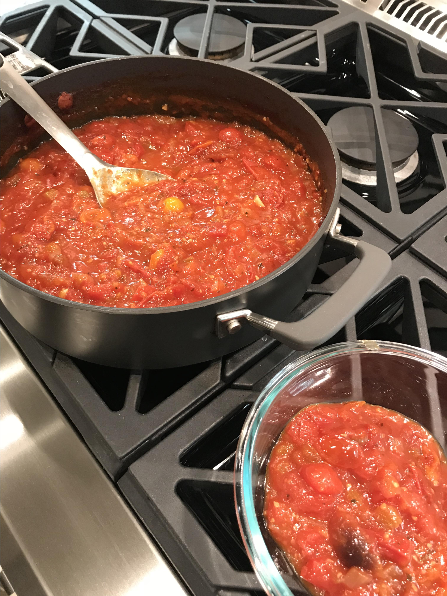

Tomato Sauce

Description
This is one of my most requested food wishes, my all-purpose basic tomato sauce. Whenever I make a meat sauce, this is my base.
You can only stir this with a wooden spoon, otherwise it's bad luck.
Ingredients
- 1/4 cup olive oil
- 1 onion, finely diced
- 1 rib celery, finely diced
+
- 1 pinch salt
- 4 cloves garlic, minced
- 2 cans (28 oz) whole peeled San Marzano tomatoes
- 2 teaspoons white sugar
- 1 teaspoon salt
- 1 teaspoon anchovy paste
- 1 teaspoon white vinegar
- 1/2 teaspoon dried Italian herbs
- 1 pinch pepper flakes
- 1 tablespoon tomato paste
Steps
- Place olive oil, onion, celery, and a pinch of salt into a large heavy saucepan or Dutch oven over medium-low heat. Cook until onions are very soft, about 15 minutes, stirring occasionally. Mix garlic into onion mixture and cook just until fragrant, about 1 more minute.
- Pour tomatoes and their juice into a large mixing bowl and use your hands to crush the tomatoes until they look pureed.
- Mix sugar, 1 teaspoon salt, anchovy paste, white wine vinegar, Italian herbs, and red pepper flakes into vegetable mixture. Raise heat to medium and cook just until liquid has evaporated. Stir in tomato paste and bring to a simmer. Pour in San Marzano tomatoes and parsley. Bring sauce to a simmer, turn heat to low, and simmer for 1 1/2 hours, adding a little water as the sauce cooks down. Stir occasionally.